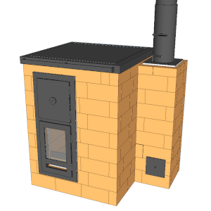
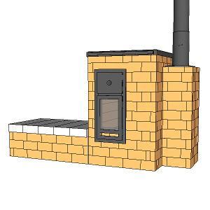
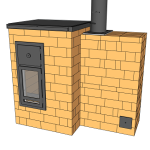
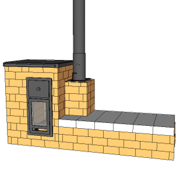
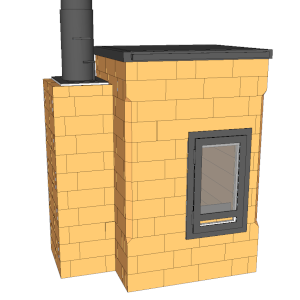
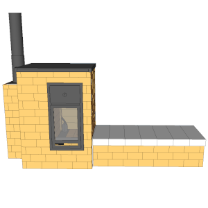

Les plans de nos poêles
Pour chaque poêle, vous trouverez à gauche le modèle principal et sur les colonnes suivantes les variantes.
|

Cuisinière de masse sans banc |
|
|---|---|
|
B8 V1 |
|
|

B14 V4 avec banc |

B14 V4 avec mur de chauffe |
|

B14 V3 avec banc côté cheminée |

B14 V4 semi-masse |
|

B28 V2 |
Cliquez sur une case pour voir la fiche du poêle correspondant.
Avertissement
Les poêles distribués sur cette page sont le fruit de plusieurs milliers d'heures de travail. Au total, nous avons construit une vingtaine de poêles de masse et les différentes conceptions imaginées, dessinées, rejetées sont plutôt de l'ordre 200..
Si vous vous lancez dans la construction d'un de ces poêles et qu'un défaut ou qu'une amélioration possible vous vient à l'esprit, contactez-nous AVANT de maçonner le poêle. Il est possible (mais pas certain !) que nous l'avons déjà testé.
Si un point n'est pas clair, n'hésitez pas non plus à nous contacter.
Les objectifs principaux :
- Cuisson :
- Il doit y avoir un four noir utilisable pendant et après la flambée ;
- Le chapeau métallique doit permettre des cuissons douces ou le séchage de fruits et légumes ;
- Longue durée de vie dans le cadre d'un usage quotidien :
- 10 ans d'usage (environ 4000 flambées) au minimum ;
- Le foyer doit résister à des chocs de bûches occasionnels ;
- Supporte 3 flambées par jour sans fissurations et en restant fonctionnel ;
- Le chapeau métallique ne doit pas flamber sous l'effet de la chaleur ;
- L'ensemble du poêle doit être accessible pour l'entretien et le nettoyage ;
- Chauffage :
- Doit pouvoir chauffer un volume correct avec 2 ou 3 flambées par jour dans le cas le plus froid ;
- Doit avoir une inertie d'au moins 12h ;
- Haut rendement global
- Rendement global moyen (sur une flambée complète) supérieur à 80% (PCI) ;
- Température des fumées toujours inférieure à 200°C dans le conduit de cheminée à 1 m de la sortie du poêle ;
- Excès d'air moyen (sur une flambée complète) inférieur à 2,5 ;
- Durée de flambée d'une heure (d'après la norme EN15250), soit 1h30 de l'allumage à la fermeture des clapets ;
- Présence d'un clapet d'obstruction étanche à 5% dans le conduit d'évacuation. Le clapet doit être facile d'accès ;
- Faible pollution atmosphérique
- Rendement de combustion moyen supérieur à 98% (taux de monoxyde de carbone inférieur à 500 ppm moyen dilué) ;
- Le poêle doit supporter des flambées violentes (taux de d'oxygène inférieur à 7% au moment du pic et/ou taux d'oxygène moyen inférieur à 11%) sans s'emballer ;
- Les allumages par le bas ne doivent pas entrainer de pollution supérieure à 1000 ppm de CO dilué moyen ;
Usage :
Il est très important de comprendre que les poêles de masse ne s'utilisent pas comme des poêles en fonte.
Pour bien en comprendre l'usage, voir la page dédiée au Manuel d'utilisation.
Simplicité et exigences
Avant de vous lancer nous vous recommandons de prendre le temps de lire entièrement le site D'UZUME, de participer à un de nos stage ou à défaut de vous tester sur la fabrication de notre modèle "bidon".
Commencez par le plus simple pour bien cerner les tenants et aboutissants. Planifiez bien votre construction et ne succombez pas à la tentation d'ajouter d'autres fonctionnalités ou de partir sur un poêle trop complexe dans l'idée d'avoir LE poêle parfait.
Faites une liste de vos exigences (votre "cahier des charges") et voyez si le poêle en question peut répondre à toutes celles ci. Si ce n'est pas le cas, revoyez vos exigences ou faites appel à une personne expérimentée.
Les poêles de masse fonctionnent bien parce qu'ils séparent les fonctions : le foyer brûle le bois et la cloche récupère la chaleur des fumées. Les systèmes tout-en-un créent souvent plus de problèmes qu'ils n'en résolvent :
- Vous voulez un système pour chauffer de l'eau chaude avec du bois ? Faites un poêle dédié au chauffage de l'eau.
- Vous voulez chauffer de pièces éloignées et cloisonnées ? Faites un deuxième poêle de masse, passez sur un autre mode de chauffage, ou isolez votre maison par l'extérieur.
- Vous voulez récupérer la chaleur de votre poêle de masse pour faire un mur ou un plancher chauffant avec circulation d'eau chaude ? Faites un système dédié.
- Vous voulez faire de l'électricité avec la chaleur du bois ? Faites un système dédié.
Un poêle de masse simple, fonctionnel et durable est déjà un moyen de chauffage merveilleux. Tout ajout de système non testé sur le long terme diminuera la durée de vie fiable de votre poêle.
Comme tout système matériel un poêle de masse a ses limites et n'est pas approprié dans tous les cas de figures. Il est possible que dans certaines situations un poêle de masse ne soit pas le meilleur moyen de chauffage.
Le débit des briques
Le débit des briques c'est la liste des différentes briques à découper pour obtenir un poêle. L'équivalent massique d'une recette de cuisine.
Le débit des briques est donné en considérant que la plupart des chutes sont réutilisées. Il donc très important de :
- Découper les briques en partant des plus grandes (ie. les linteaux). Une partie des chutes résultantes seront réutilisées. À chaque fois qu'on a une chute, on s'en sert pour découper la plus grande brique possible et présente dans le débit.
- Découper sur le trait de coupe pour que l'épaisseur de la lame soit répercutée des deux cotés.
- Prévoir une marge d'au moins 10% de briques supplémentaires lors de la commande pour anticiper les erreurs de coupe.
Licence
Les plans que vous trouverez sur cette page et sur ce site sont distribués librement, sous une licence open-source CC BY-SA 4.0 : vous êtes libres de partager, d'utiliser, de transformer ce travail, même pour une utilisation commerciale tant que vous citez les auteurs originaux et que vous partagez les résultats de votre travail sous les mêmes conditions.
La construction d'un poêle de masse implique de nombreuses compétences et, bien que nous tentions de fournir les informations les plus claires possibles, nous ne pouvons garantir la réussite de votre construction. Nous ne donc saurions être tenus responsables de tout dommage, matériel ou immatériel causé à vous ou à vos équipements.